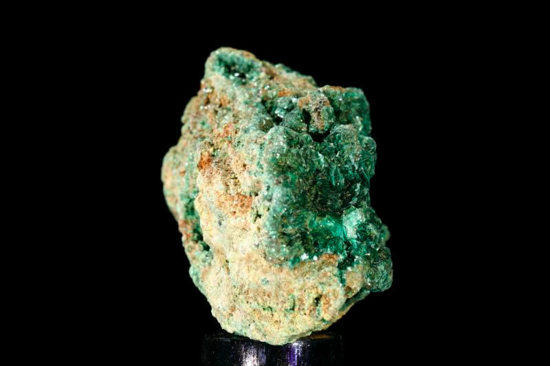

Протактиний
Протакти́ний (химический символ — Pa, от лат. Protactinium, устар. название — protoactinium) — химический элемент 3-й группы (по устаревшей классификации — побочной подгруппы третьей группы, IIIB) седьмого периода периодической системы химических элементов Д. И. Менделеева, с атомным номером 91.Относится к семейству актиноидов.Простое вещество протактиний — это плотный радиоактивный металл светло-серого цвета.
Существование элемента предсказано в 1871 г. Д. И. Менделеевым; впервые обнаружен в 1913 г. К. Фаянсом и О. Гёрингом (Германия); идентифицирован в 1918 г. О. Ганом и Л. Майтнер (Германия) и независимо от них Ф. Содди и Дж. Кранстоном (Великобритания). Название происходит от греч. πρῶτος – первый и актиний, поскольку протактиний является предшественником актиния при радиоактивном распаде 238U.

Металлический протактиний получают при восстановлении PaF4 парами бария или кальция при 1400—1500 °С.Из-за дефицита протактиния, его высокой радиоактивности и радиотоксичности в настоящее время он не находит применения вне научных исследований, и для этой цели его получают в основном из отработанного ядерного топлива. Используется в качестве добавки к топливному урану.